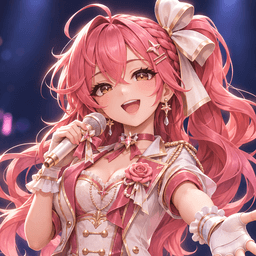
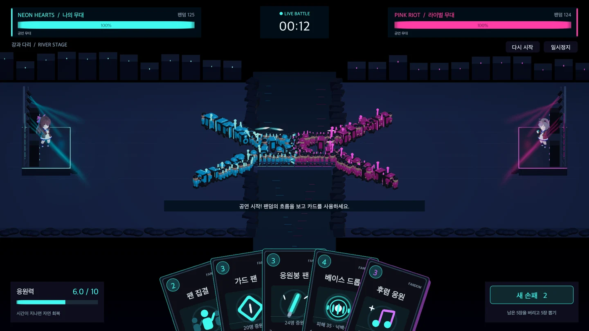
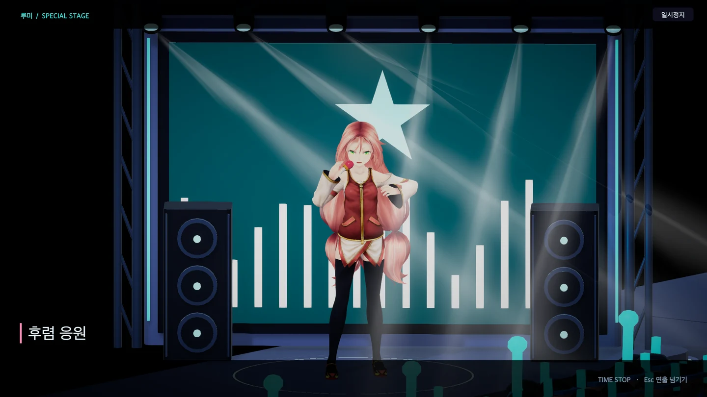
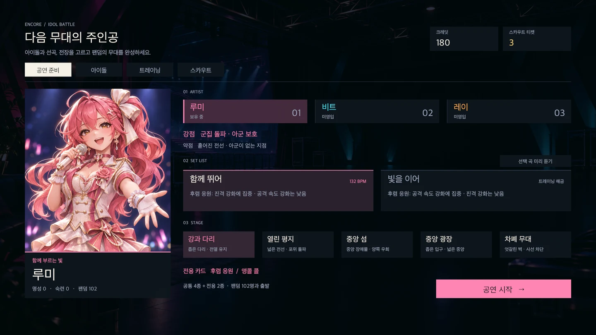

Entities 1.5 + Burst Jobs
공간 분할, 이동, 적 탐색, 공격을 병렬 Job으로 처리합니다.

Unity 6 · URP · ECS
공연 카드를 선택해 팬 유닛을 증원하거나 범위 스킬을 발동하는 실시간 전략 게임입니다. 카드 효과는 아이돌 공연을 마치고 카메라가 전장으로 돌아온 순간 적용됩니다.

전투 규칙은 독립 ECS World에서 계산하고 렌더러는 상태 스냅샷만 읽습니다. 카드 공연 중에는 전투 시계를 멈추고 카메라와 아이돌 연출만 진행합니다.
30 HzEntities 1.5와 Burst Jobs를 사용합니다. 팬별 GameObject와 Animator를 만들지 않는 GPU 인스턴싱 경로입니다.
BattleController가 플레이어 입력과 상대 AI의 카드 사용을 같은 명령 경로로 처리합니다.
공간 분할, 이동, 적 탐색, 공격을 병렬 Job으로 처리합니다.
Entities Graphics 대신 GPU 인스턴싱을 사용합니다. FanHitVfx는 최대 256개 효과를 결합 메시로 표시합니다.
렌더러는 남은 강화 시간과 경직 상태를 포함한 FanVisual을 읽습니다.
카드 수락은 비용을 한 번 지불하고 전투 시간을 잠급니다. 전장에 복귀한 뒤에만 효과를 적용합니다.
| 단계 | 범위 스킬 | 증원 카드 | 핵심 규칙 |
|---|---|---|---|
| 아이돌로 이동 | 0.65초 | 0.65초 | 카메라가 무대로 접근 |
| 공연 | 2.5초 | 1.2초 | 카드별 동작과 소품 접점 IK |
| 전장 복귀 | 0.75초 | 0.75초 | 전체 구도로 돌아온 뒤 효과 대기 |
| 효과와 히트스톱 | 0.3초 | 0.3초 | 효과 1회 적용 후 재개 |
| 총 연출 | 4.2초 | 2.9초 | Esc 스킵은 약 0.35초 복귀 요청 |
Unity Editor에서 실제 실행 중에 캡처한 화면입니다.


Unity Editor에서 한 경기의 전체 흐름과 주요 기능의 상태 변화를 검증했습니다.
루미·다리의 실제 명령과 상대 AI 경기에서 262.824초에 종료했습니다. 수락 89회, 해결 89회, 지형 위반 0, 자동 증원 0, 정지 판정 0, 보상 1회를 확인했습니다.
MVP 12개, Integration 7개, Presentation 5개, Concert 4개, Projectile 7개, Readability 4개, Contact 16개 조합을 통과했습니다.
Career 5그룹, IdolCombat 8그룹, CareerLoop 6그룹을 통과했습니다.
BattleHud → BattleController.TryPlay → BattleSimulation.Step() // 30 Hz 전투 → ResolveQueuedPerformances() // 전장 복귀 후 효과 → LastPerformanceResult // 실제 대상·처치 집계 → FanVisual snapshot → Renderers // 화면 표시
핵심 파일은 Core/BattleController.cs,
Simulation/BattleSimulation.cs,
Simulation/FanSimulationJobs.cs,
Presentation/FanCrowdRenderer.cs입니다.
JobHandle build = new BuildFanGridJob { Fans = before, Grid = grid.AsParallelWriter() }.Schedule(count, 64);
JobHandle move = new MoveFansJob
{
Before = before, Grid = grid, ToRight = navigation.ToRight, ToLeft = navigation.ToLeft,
After = moved, Delta = dt, Time = Elapsed, Map = navigation.Map
}.Schedule(count, 64, build);
move.Complete();
grid.Clear();
// A subarray prevents stale buffer entries from entering the spatial grid.
var activeMoved = moved.GetSubArray(0, count);
JobHandle movedGrid = new BuildFanGridJob { Fans = activeMoved, Grid = grid.AsParallelWriter() }.Schedule(count, 64);
JobHandle attacks = new AttackFansJob
{
Before = activeMoved, Grid = grid, After = resolved, Hits = hits,
Time = Elapsed, Map = navigation.Map
}.Schedule(count, 64, movedGrid);
attacks.Complete();private void DrawParts(Mesh mesh, Material[] palette, Matrix4x4[] poses, int count)
{
if (mesh == null) return;
for (int sub = 0; sub < 4; sub++)
if (mesh.GetIndexCount(sub) > 0)
Graphics.DrawMeshInstanced(mesh, sub, palette[sub], poses, count,
null, ShadowCastingMode.Off, true, gameObject.layer, null, LightProbeUsage.Off);
}PC WebGL 다운로드는 약 45 MB입니다. macOS의 내장 브라우저에서 공연 준비, 경기 진입, 한글 표시와 카드 사용 후 공연 연출을 확인했습니다.
성능 수치 미검증
양 팀 합산 2,000명은 코드의 병력 상한입니다. 최대 병력에서의 브라우저 프레임 시간은 미측정입니다.
PC WebGL 조작
공연 준비에서 아이돌·곡·전장을 선택하고 공연을 시작합니다. 카드 클릭 또는 1–5로 선택하고, 범위 스킬은 전장을 클릭해 발동합니다. R은 새 손패, Space는 일시정지, Esc는 현재 공연 건너뛰기입니다.
아트 상태
루미는 원본 메시와 UV를 보존한 재작업을 실제 전투 프리팹에 반영했습니다. 비트와 레이의 외형은 첫 초안입니다.